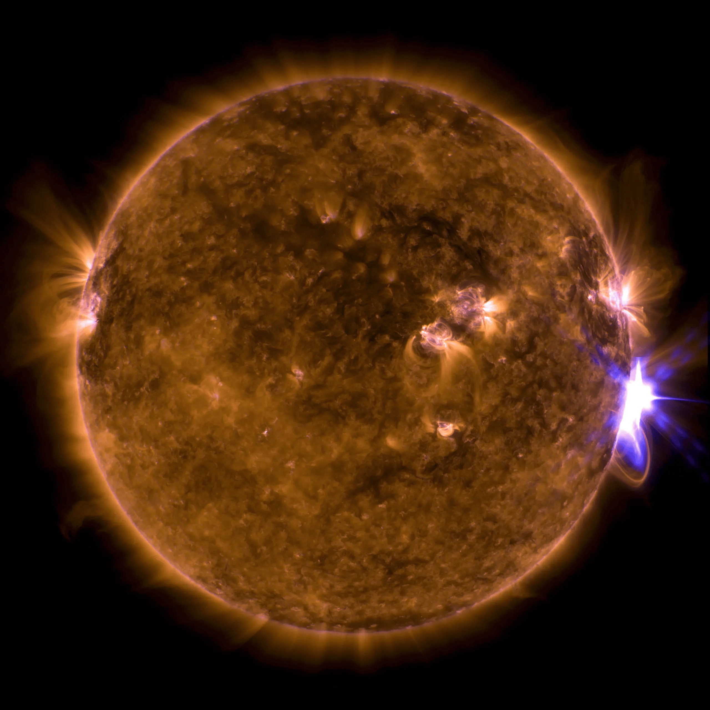

Newest
Case closed on long-standing space weather mystery
A 155-year-old typo made an 1848 train delay in England look like the earliest case of space weather disrupting technology. New research sets the record straight.